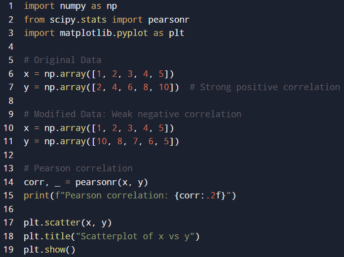
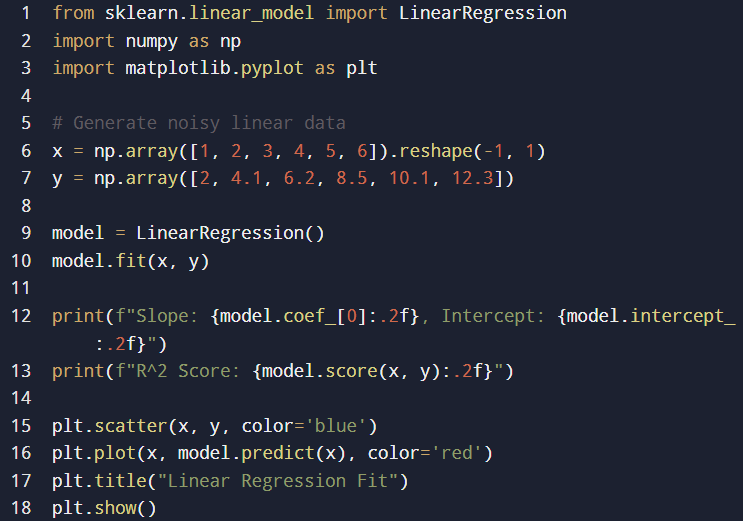
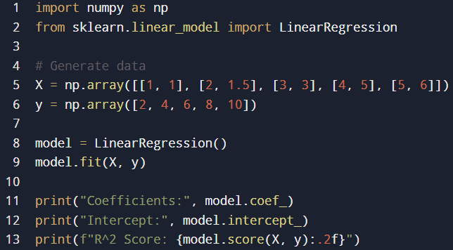
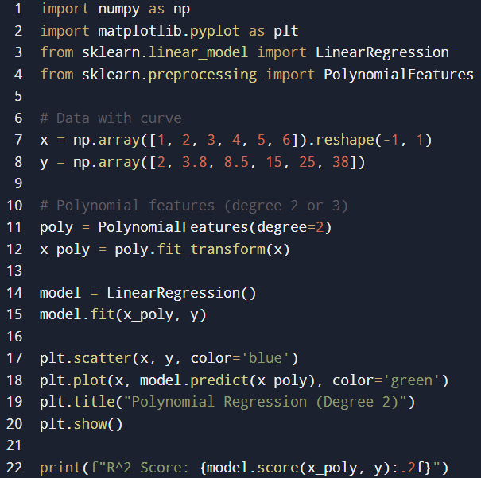

Machine Learning
Learning Outcomes
▶
1- Articulate the legal, social, ethical, and professional issues faced by machine learning professionals.
2- Understand the applicability and challenges associated with different datasets for the use of machine learning algorithms.
3- Apply and critically appraise machine learning techniques to real-world problems, particularly where technical risk and uncertainty is involved.
4- Systematically develop and implement the skills required to be effective member of a development team in a virtual professional environment, adopting real-life perspectives on team roles and organisation.
Collaborative Discussion 1
▶
Initial Post
The advent of Industry 4.0 and the ongoing transition towards Industry 5.0 are reshaping sectors by introducing intelligent automation, cyber-physical systems,
and human-machine collaboration. As someone interested in the logistics and supply chain sector, I see Industry 4.0 as a double-edged sword: it improves efficiency
through real-time tracking and predictive analytics, but also exposes the sector to critical dependencies on integrated information systems.One illustrative incident
is the 2021 system failure at FedEx’s TNT Express, a global courier company. While not widely cited in academic texts, this case exemplifies the fragility of
over-reliance on digital infrastructure. A cyberattack using NotPetya ransomware crippled TNT’s European operations for several days, resulting in shipment delays,
customer dissatisfaction, and significant financial losses. FedEx reported a $300 million economic impact due to the disruption (FedEx Corporation, 2017). The
reputational cost was also substantial, particularly given TNT's competitive positioning in the time-sensitive delivery market.This case underscores a critical
challenge in Industry 4.0: interconnectivity increases efficiency but also amplifies systemic risk. Moreover, it highlights the need for resilient cybersecurity
frameworks and robust contingency planning—especially in sectors that rely on real-time data and autonomous systems. As Industry 5.0 seeks to bring human-centricity
back into digital transformation (Metcalf, 2024), there’s an opportunity to design systems that blend automation with human oversight, improving both performance and
risk mitigation.
References
• FedEx Corporation. (2017). FedEx Reports Impact of Cyberattack. Retrieved from: https://newsroom.fedex.com
• Metcalf, J. (2024). Human-Centered Technology: Transitioning from Industry 4.0 to 5.0. Journal of Technological Futures, 12(1), 33–48.
Peer Response
Peer Response 1 – Response to Majed Alzaabi
Majed, your discussion of Industry 4.0’s transformation of the financial sector, particularly in fraud detection and automation, is very insightful. The TSB
Bank failure is a poignant example of how poorly executed IT transitions can have cascading effects. As you mentioned, the risks of automation must be
balanced with robust planning and human oversight.To prevent incidents like TSB’s 2018 IT migration failure, a staged or phased deployment strategy would have helped,
allowing components of the new system to be tested incrementally while maintaining core operations. Moreover, incorporating rollback capabilities and real-time monitoring
could have enabled a faster recovery when anomalies were detected (Gartner, 2018). Human-in-the-loop (HITL) design, emphasized in Industry 5.0, would also help
maintain critical oversight during AI and system-led decisions, especially in high-stakes transitions.Additionally, continuous penetration testing and simulation
of stress conditions before migration could have revealed system vulnerabilities earlier. As Metcalf (2024) notes, Industry 5.0 demands ethical, resilient design
frameworks—not only in customer-facing features but also in backend system architectures.Ultimately, we need a paradigm where automation and machine intelligence
are augmented by human judgment and flexible crisis protocols, enabling systems to fail gracefully rather than catastrophically.
References
• Gartner. (2018). IT Change and Configuration Management for Digital Business.
• Metcalf, J. (2024). Human-Centered Technology: Transitioning from Industry 4.0 to 5.0. Journal of Technological Futures, 12(1), 33–48.
• FCA & PRA. (2022). Final Notice: TSB Bank IT Incident Report.
Peer Response 2 – Response to Shaikah Salim Alharthi
Shaikah, your analysis of the British Airways 2017 IT meltdown is a strong reminder of how fragile complex systems can be when core infrastructure lacks redundancy.
Your point about legacy systems conflicting with new digital ambitions resonates strongly with current challenges in aviation.To avoid similar catastrophes,
comprehensive disaster recovery and high-availability systems should have been fundamental to BA’s IT strategy. Specifically, redundant power supplies, cloud-based
backups, and geographically distributed data centers could have reduced the blast radius of a single point of failure (Xu et al., 2018).Moreover, conducting regular
system audits and risk modelling scenarios using digital twins or simulation tools might have uncovered the vulnerability in the power system. These predictive
capabilities are increasingly accessible through Industry 4.0 technologies but must be governed with Industry 5.0’s ethical and human-centric principles (Metcalf, 2024).
Interdepartmental communication also plays a critical role. A cross-functional resilience task force—blending IT, engineering, customer service, and regulatory
compliance—could ensure that both technological and human contingency plans are in place.In summary, while BA’s case illustrates the cost of underinvestment in
digital resilience, Industry 5.0 provides a pathway forward by emphasizing collaboration, ethical foresight, and system adaptability.
References
• Metcalf, J. (2024). Human-Centered Technology: Transitioning from Industry 4.0 to 5.0. Journal of Technological Futures, 12(1), 33–48.
• Xu, X., Xu, C., & Li, L. (2018). Industry 4.0: State of the art and future trends. International Journal of Production Research, 56(8), 2941–2962.
• BBC. (2017). British Airways flights disrupted by IT failure.
Peer Response 3 – Response to Rayyan Mohamed Alnaqbi
Rayyan, your post compellingly highlights how Industry 4.0 has revolutionized manufacturing through smart factories, while also exposing them to significant
vulnerabilities, as seen in Honda’s 2017 ransomware incident. The WannaCry attack on their Sayama plant serves as a striking reminder that technological advancement
without parallel cybersecurity investment can backfire severely.To prevent such incidents, manufacturers should adopt multi-layered cybersecurity frameworks that
include regular software patching, endpoint protection, and proactive network monitoring (Gillis, 2023). In Honda's case, the reliance on outdated Windows systems
enabled the attack—underscoring the importance of legacy system audits and automated update mechanisms across all devices connected to the IoT network.Furthermore,
integrating AI-driven threat detection tools can provide early warnings of abnormal network behavior. However, as you rightly noted, Industry 4.0’s automation needs
to be balanced with human oversight—which Industry 5.0 emphasizes through its focus on human-machine collaboration and resilience (Breque, 2021).Training staff in cyber
hygiene and instituting a cyber incident response plan could also improve preparedness. The use of digital twins for simulated cyberattack scenarios can help anticipate
system-wide impacts and improve contingency planning (Nahavandi, 2019).Ultimately, Industry 5.0 offers a roadmap not just for technological innovation but for
embedding ethical foresight and operational robustness—making manufacturing more secure and sustainable.
References
• Gillis, A. S. (2023). WannaCry ransomware. TechTarget. Retrieved from: https://www.techtarget.com/searchsecurity/definition/WannaCry-ransomware
• Breque, M. (2021). Industry 5.0 – Towards a sustainable, human-centric and resilient European industry. European Commission.
• Nahavandi, S. (2019). Industry 5.0 – A Human-Centric Solution. Sustainability, 11(16), 4371.
Summary Post
The progression from Industry 4.0 to Industry 5.0 marks a pivotal transformation in the logistics and supply chain sector, blending automation with human-centric design.
In my initial post, I highlighted the dual impact of Industry 4.0: while technologies such as real-time tracking and predictive analytics have enhanced operational
efficiency, they have simultaneously increased systemic risks due to dependency on interconnected digital infrastructures. This was exemplified by the 2021 NotPetya
cyberattack on FedEx’s TNT Express, which led to a $300 million loss and reputational damage (FedEx Corporation, 2017).Feedback from my peers reinforced the argument that
Industry 4.0’s technological interconnectivity, though beneficial, necessitates robust cybersecurity and contingency planning. As Shaikah Alkhaayyal pointed out,
interdependent systems are vulnerable to cascading failures, making human-cybernetic control and strategic redundancy essential. Similarly, others expanded the
conversation by proposing actionable Industry 5.0 solutions. For instance, the integration of AI-powered cybersecurity with human-in-the-loop frameworks was recommended
to maintain both speed and accountability in threat detection (Fei Tao, 2019). Additionally, the use of digital twins for simulating and stress-testing vulnerabilities
provides proactive resilience (Saberi, 2018).Further insights emphasized the role of collaborative robots (cobots) in ensuring human oversight in automated environments
and stressed the importance of reskilling workers to adapt to evolving digital roles (Nahavandi, 2019; Ivanov, 2020). These human-centered strategies underscore
Industry 5.0’s potential to create a more adaptable and secure logistics infrastructure.In conclusion, while Industry 4.0 has revolutionized logistics, its
fragilities demand an Industry 5.0 approach that integrates human oversight, cybersecurity, and workforce development. This blended model ensures not only
operational efficiency but also systemic resilience and long-term sustainability.
References
• FedEx Corporation. (2017). FedEx Reports Impact of Cyberattack. Retrieved from https://newsroom.fedex.com
• Fei Tao. (2019). Digital Twin in Industry: State-of-the-Art. IEEE Xplore. https://ieeexplore.ieee.org/document/8477101
• Saberi, S. (2018). Blockchain technology and its relationships to sustainable supply chain management. Taylor & Francis.
https://www.tandfonline.com/doi/full/10.1080/00207543.2018.1533261
• Ivanov, D. (2020). Predicting the impacts of epidemic outbreaks on global supply chains: A simulation-based analysis on the coronavirus outbreak
(COVID-19/SARS-CoV-2) case. ScienceDirect. https://www.sciencedirect.com/science/article/pii/S1366554520304300?via%3Dihub
• Nahavandi, S. (2019). Industry 5.0—A Human-Centric Solution. MDPI. https://www.mdpi.com/2071-1050/11/16/4371
• Metcalf, J. (2024). Human-Centered Technology: Transitioning from Industry 4.0 to 5.0. Journal of Technological Futures, 12(1), 33–48.
Correlation and Regression Week 3
▶
✅ 1. Modified Code Examples
🔹 A. covariance_pearson_correlation.ipynb

🔹 B. linear_regression.ipynb

🔹 C. multiple_linear_regression.ipynb

🔹 D. polynomial_regression.ipynb

✅ 2. Observations Summary

✅ 3. Reflection on Learning Outcomes
📘 Reflective Summary:
This activity provided hands-on insight into the application of regression and correlation techniques in machine learning. By modifying datasets across different models,
I gained a deeper understanding of how input variability directly influences model performance and statistical output.From a legal and ethical standpoint, this exercise
demonstrated the importance of responsible data handling. For instance, altering data inputs showed how easily results can be skewed—highlighting how biased or
poor-quality datasets could lead to misleading or harmful outcomes. This emphasizes the ethical responsibility of data scientists to ensure transparency, fairness,
and reproducibility when working with models that may impact people’s lives, especially in sectors like healthcare, finance, or hiring.There are also social
implications. If regression models are used to inform decisions that affect individuals or groups (e.g., loan approvals), flawed data could reinforce inequality.
This connects to the broader discussion on algorithmic fairness and inclusion. As professionals, machine learning practitioners must remain aware of these impacts
and advocate for inclusive, bias-aware data collection and model auditing.On the professional side, the activity reinforced the importance of continuous model
validation. When experimenting with polynomial regression, I observed that increasing the model’s complexity led to a high R² score but poor generalization—this
reflects overfitting, a common professional challenge. It is critical for ML practitioners to balance performance with interpretability and to document all modelling
choices transparently.
In terms of dataset challenges, this activity showcased several important aspects:
•Small or limited data can cause unstable models with poor generalization.
•Outliers disproportionately influence linear models, skewing the regression line.
•Multicollinearity, which I simulated in multiple regression, can confuse the model and reduce interpretability.
•Nonlinear relationships require more flexible models like polynomial regression, which adds complexity but risks overfitting.
Each notebook revealed how the structure, quality, and distribution of data shape machine learning outcomes. The exercise reinforced that algorithmic
performance is only as good as the data it’s built upon—and that understanding the context and limitations of the data is as important as model accuracy itself.
Jaccard Coefficient Calculations Week 5
▶
Perceptron Activities Week 7
▶
Collaborative Discussion 2
▶
CNN Model Activity Week 9
▶
Model Performance Measurement Week 11
▶